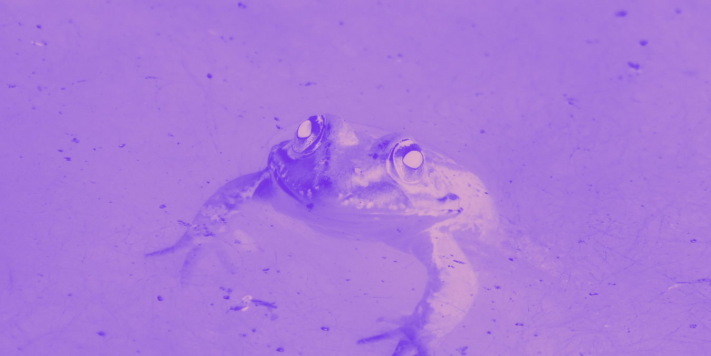
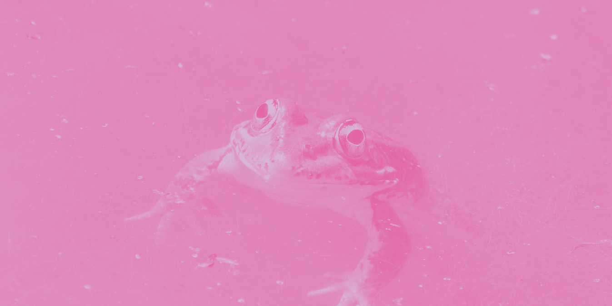

VÅDE FRØER
  Disse frøer er helt pjattede med at pjaske i vand. Det svupper og klasker når de går.
Sidder de i fuld sol for længe, dør de, da de bliver tørre.
Ser du en tør våd frø, så skynd dig at spytte på den med al din kraft.
Eller hæld din nuværende drink på den, om det så er sodavand eller kaffe.
Du har nu reddet en våd frøs liv, og noget heldigt vil ske for dig inden for 3 dage.